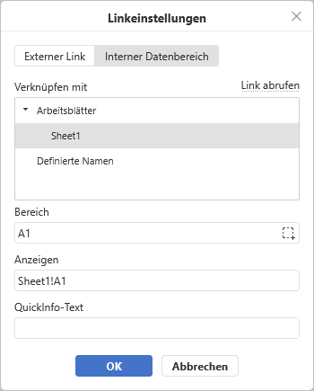

Link einfügen
Um einen Link in der Tabellenkalkulation einzufügen:
- Wählen Sie die Zelle, in der Sie einen Link einfügen wollen.
- Wechseln Sie in der oberen Symbolleiste auf die Registerkarte Einfügen.
- Klicken Sie auf das Symbol Link in der oberen Symbolleiste.
-
Das Fenster Linkeinstellungen wird angezeigt, in dem Sie die Link-Parameter festlegen können:
-
Wählen Sie den gewünschten Linktyp aus:
Verwenden Sie die Option Externer Link und geben Sie eine URL im Format
http://www.example.comin das Feld Verknüpfen mit unten ein, wenn Sie möchten einen Link hinzufügen, der zu einer externen Website führt. Wenn Sie einen Link zu einer lokalen Datei hinzufügen müssen, geben Sie die URL in denDatei://Pfad/Kalkulationstabelle.xlsx(für Windows) oderDatei:///Pfad/Kalkulationstabelle.xlsx(für MacOS und Linux) Format in das Feld Verknüpfen mit unten ein.Der Link
Datei://Pfad/Kalkulationstabelle.xlsxoderDatei:///Pfad/Kalkulationstabelle.xlsxkann nur in der Desktop-Version des Editors geöffnet werden. Im Web-Editor können Sie den Link nur hinzufügen, ohne ihn öffnen zu können.
Verwenden Sie die Option Interner Datenbereich, wählen Sie ein Arbeitsblatt und einen Zellbereich in den Feldern unten oder einen zuvor hinzugefügten benannten Bereich aus, wenn Sie einen Link hinzufügen möchten, der zu einem bestimmten Zellbereich in derselben Tabelle führt.

Sie können auch einen externen Link generieren, der zu einer bestimmten Zelle oder einem Zellbereich führt, indem Sie auf die Schaltfläche Link abrufen klicken, oder verwenden Sie dazu die Option Link zum diesen Bereich erhalten im Kontextmenü des gewünschten Zellbereichs.
-
Anzeigen — geben Sie einen Text ein, der angeklickt werden kann und zu der angegebenen Webadresse führt.
Wenn die gewählte Zelle bereits Daten beinhaltet, werden diese automatisch in diesem Feld angezeigt.
- QuickInfo-Text — geben Sie einen Text ein, der in einem kleinen Dialogfenster angezeigt wird und den Nutzer über den Inhalt des Verweises informiert.
-
Wählen Sie den gewünschten Linktyp aus:
- Klicken Sie auf OK.
Um einen Link hinzuzufügen, können Sie auch die Tastenkombination STRG+K nutzen oder mit der rechten Maustaste an die Stelle klicken, an der Sie den Link einfügen möchten, und wählen Sie die Option Link im Rechtsklickmenü aus.
Bewegen Sie den Mauszeiger über den hinzugefügten Link, um den QuickInfo anzuzeigen, der den von Ihnen angegebenen Text enthält. Um dem Link zu folgen, klicken Sie auf den Link in der Tabelle. Um eine Zelle auszuwählen, die einen Link enthält, ohne den Link zu öffnen, klicken und halten Sie die Maustaste gedrückt.
Um den hinzugefügten Link zu entfernen, wählen Sie die Zelle mit dem entsprechenden Link aus und drücken Sie die Taste ENTF auf Ihrer Tastatur oder klicken Sie mit der rechten Maustaste auf die Zelle und wählen Sie die Option Alle löschen aus der Menüliste aus.